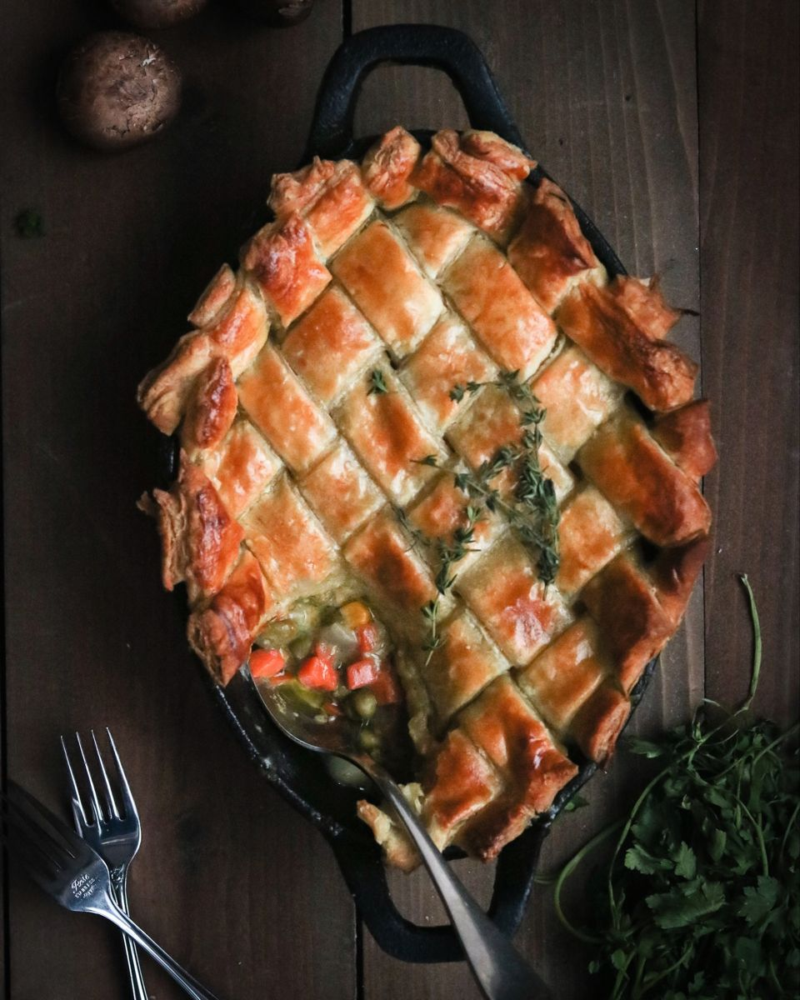
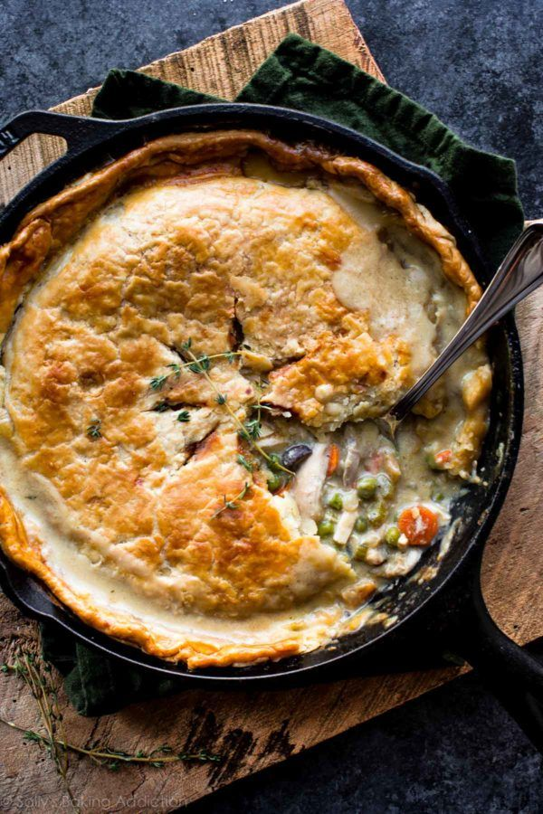
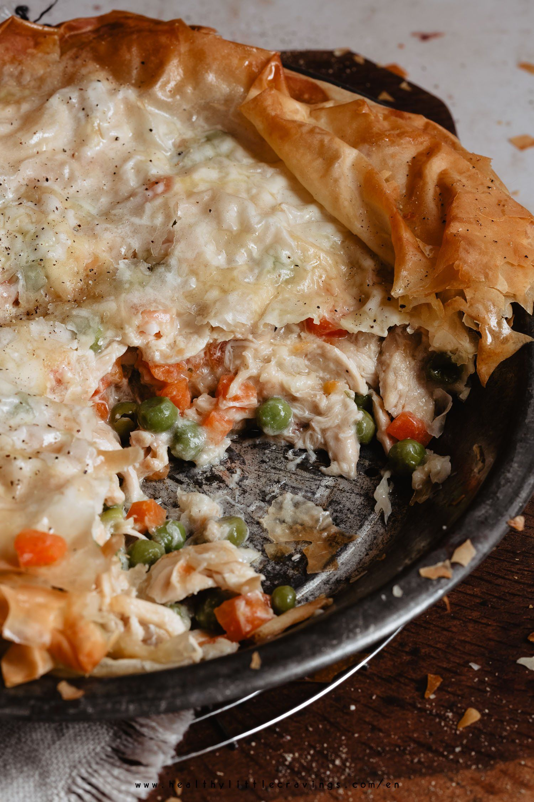
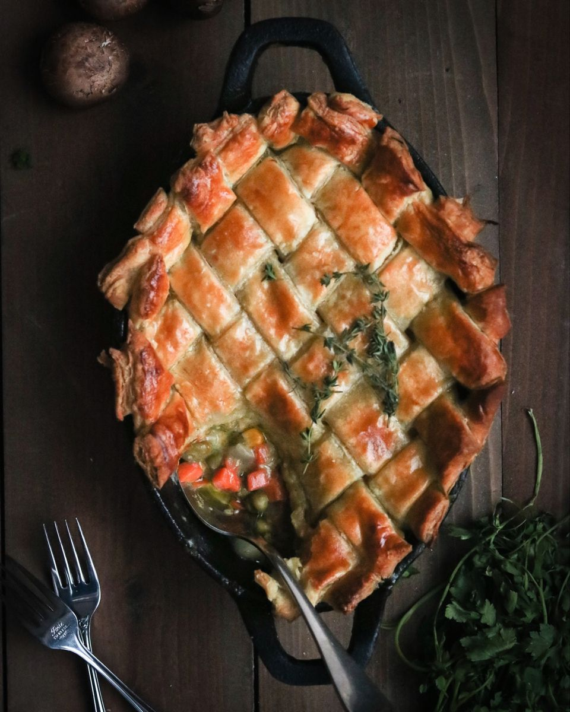
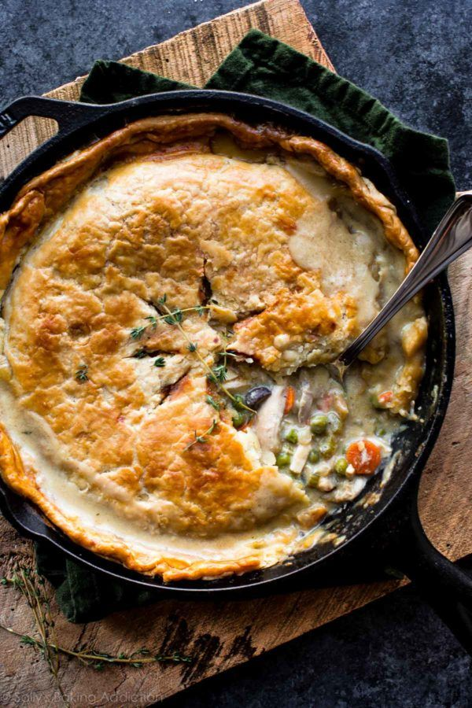
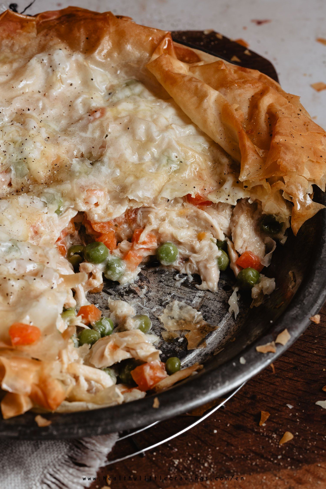

Chicken Pot Pie
Chicken pot pie that will make you cry... Because it's so good, and also really easy to make.
 





Chicken pot pie that will make you cry... Because it's so good, and also really easy to make.
Step 1
Start by removing the spine of the chicken using kitchen scissors, place the spine side down onto a cutting board and press down onto the breast leaving a flat chicken.
Step 2
Tuck the wings behind the head, line a baking sheet with foil and wire rack. Place chicken on the wire rack, pat dry, lightly coat with oil and massage all over, season with salt and pepper, and roast at 425F for 30-45 minutes or an internal temperature of 165F.
Step 3
Remove the crispy skin and let it cool. Finely chop the crispy skin, place into a cup and place to the side for later. Once chicken is cooled completely, remove the chicken from the bone, shred and place into a bowl.
Step 4
For the filling, to a medium saucepan add chicken stock and bring to a light boil. Immediately turn off the heat and add dried morels mushrooms and chanterelles mushrooms along with the bay leaves. Cover with foil and let steep for 15-20 minutes.
Step 5
Remove the bay leaves and squeeze all the liquid from the mushrooms back to the pan. Rough chop the chanterelles and slice the morels and set to the side.
Step 6
In a medium pot, heat olive oil over medium-high heat and once hot add in cubed ham searing until nicely browned and remove from pan. Reduce the heat to medium and add in unsalted butter. Once butter is melted, add in diced onions, diced carrots, sliced garlic cloves, chopped mushrooms, and salt and pepper to taste. Stir and cook until just translucent.
Step 7
Mix in all-purpose flour and keep stirring and cooking for 1 minute then add in whole milk, heavy cream, and mushroom/chicken stock. Heat over medium heat, stirring constantly.
Step 8
Once thickened, add in the ham, frozen peas, chopped chicken skins, and shredded chicken. Mix until well combined. Add filling to a cast iron pan and cover with puff pastry, trim and crimp the edges, brush the top with heavy cream, and score the middle with a paring knife.
Step 9
Bake in the oven at 400F for 20 minutes then reduce to 350F for an additional 20-25 minutes.
Step 10
Remove from the oven and let rest for 5-10 minutes before serving.
1 whole roasted chicken
2 cup chicken stock
1/2 cup dried morels mushrooms
1/4 cup chanterelles mushrooms
2 bay leaves
2 yellow onions
1 large carrot
8 cloves garlic
3/4 cup cubed ham
1 tbsp Thyme leaves, rough chopped
5 tablespoons unsalted butter
Salt and pepper to taste
1/2 cup all-purpose flour
1 cup milk
1 cups heavy cream
10 oz bag frozen peas
Puff pastry enough to cover your pan